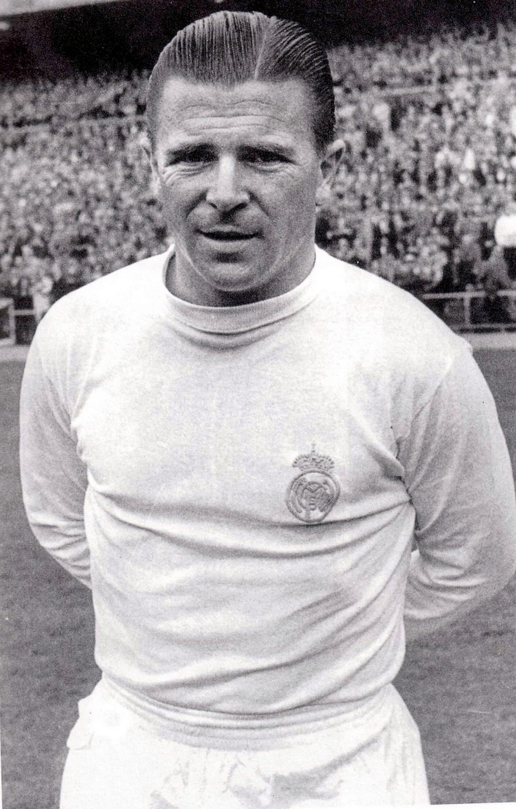

Puskáf Ferenc
Született: Budapest, 1927. április 1.
Elhunyt: 2006. november 17.
Kiemelkedő eredményei
Puskás Ferenc, született Purczeld (Budapest, 1927. április 1. – Budapest, 2006. november 17.) a Nemzet Sportolója címmel kitüntetett, olimpiai arany- és világbajnoki ezüstérmes magyar labdarúgó, több klubcsapat és válogatott edzője, posztumusz dandártábornok. Az Aranycsapat csapatkapitánya, közismert becenevén Puskás Öcsi; Spanyolországban Pancho néven becézték. A FIFA-listán a világ valaha volt legjobbjai között szerepel. 2016-ban a goal.com internetes szakportál „Legendák világbajnoksága” elnevezésű szavazásán a valaha volt legjobb labdarúgónak választották.
85-szörös magyar és 4-szeres spanyol válogatott; háromszoros BEK győztes, a BEK gólkirálya 2 alkalommal, Európa legjobb góllövője (1948), Európa-kupa gólkirály 10 góllal (1948–1953-as Európa-kupa); az egyetlen játékos aki 4 gólt szerzett egy BEK vagy BL-döntőn (1960), 84 gólt szerzett a magyar válogatottban, ezzel egészen 2019-ig minden idők legeredményesebb európai válogatott játékosa volt, ekkor Cristiano Ronaldo megelőzte. A XX. század legjobb góllövője. Az egyetlen játékos a világon, aki gólt lőtt világbajnoki (1954), olimpiai (1952), Európa-bajnoki (Európa-kupa, 1953), Bajnokok Ligája- (BEK, 1960) és Interkontinentális kupadöntőben (1960) is. 352 magyar bajnoki mérkőzésen 360 gólt, míg 180 spanyol bajnoki mérkőzésen 156 gólt szerzett; Puskás életében 1271 mérkőzésen lépett pályára, és 1571 gólt szerzett, mérkőzésenkénti gólátlaga 1,24 volt,[4] a hivatalos (bajnoki, kupa-, válogatott és egyéb díj-) 806.[5] 5-szörös magyar bajnok a Kispest Honvéddal (Kispest AC/Budapesti Honvéd SE), 6-szoros spanyol bajnok a Real Madriddal; 4-szeres magyar és szintén 4-szeres spanyol gólkirály, 1-szeres spanyol kupagyőztes (1962). Edzőként az Antarktisz kivételével minden földrészen dolgozott. Szövetségi kapitányként Szaud-Arábia és Magyarország válogatottjai élén tevékenykedett. Bajnokcsapatok Európa-kupája-döntős és görög bajnok a Panathinaikósszal, görög bajnok az AEK Athénnal is, ausztrál bajnok és kupagyőztes a South Melbourne-nel. További bajnoki érmek sorát nyerte egyiptomi, paraguayi, chilei és görög csapataival.
